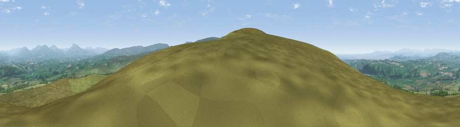

Viewpoint near Wray
#3228 in England · top 8% of its area beats it · near WrayWhere it is
The exact computed spot (SD 58775 64875). Click the marker for map links.
The view, rendered

A 360° render of this exact spot computed from the terrain model, tree cover and land cover — summer colours, afternoon light, calibrated against photographs of famous viewpoints. Real trees, hedges and buildings will differ in detail.
The panorama
Grey silhouette: terrain skyline in each direction (720 bearings, Earth curvature and refraction included). Dashed green: skyline with trees (+15 m) and buildings (+8 m) as obstacles. Blue strip: how far the ground is visible on each bearing.
Where the view opens
Wedge length = distance to the farthest visible ground on that bearing (vegetation-aware). Rings at 10, 25 and 50 km.
What fills the view
86% grassland · 9% woodland · 3% cropland · 2% water ·
Angular shares of the visible panorama (visual magnitude), not map area. Landscape diversity 0.24 (0–1 Shannon).
Key numbers
More beautiful places nearby
The staircase of upgrades: each row has a higher view potential than everything closer. Driving times are estimates from straight-line distance, calibrated against real road routing — check an actual route before setting out.
| Place | Direction | Drive | Score |
|---|---|---|---|
| Viewpoint c9201_7202 | SSE · 5 km | ~11 min | 76.1 |
| Viewpoint c9170_7172 | S · 6 km | ~13 min | 77.0 |
| Viewpoint near Quernmore | SW · 7 km | ~14 min | 77.7 |
| Viewpoint near Quernmore | SW · 7 km | ~14 min | 78.0 |
| Warton Crag | NW · 12 km | ~23 min | 83.2 |
| Viewpoint near Grange-over-Sands | NW · 23 km | ~39 min | 83.4 |
| Viewpoint near Cartmel | WNW · 27 km | ~43 min | 87.0 |
| Viewpoint near Cartmel | WNW · 27 km | ~44 min | 87.2 |
54.07814, -2.63157 · source: screening · position refined by local search. Computed location — check access rights before visiting.